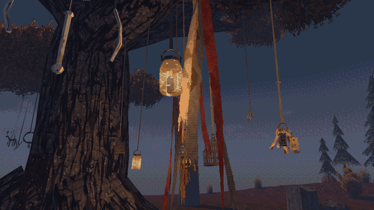

Tutorials › Hang Charms from a Tree That Sway in the Wind
How to Hang Charms from a Tree That Sway in the Wind in Godot 4
Charms on cords under a tree's limbs, swinging in the stepped wind of PS1 games, a longer cord slower, the same tree hung the same by a seed.

Things hung from a tree are half of a horror forest's mood, and they should move. One script on the tree hangs a charm on a cord at each of its Hang markers and sways them in the stepped wind of PS1 games: every pivot holds still and then jumps, six times a second; a longer cord swings slower and less, and each charm has its own phase, so no two move together. A seed picks the cords, so the same tree hangs the same way every time, and hang() ties one more on at runtime.
Script: hanging_charms.gd (MIT) · Godot 4.3 or newer · its folder on GitHub
How to use it
- Attach
hanging_charms.gdto your tree's root (aNode3D) and addMarker3Dchildren namedHang...wherever a cord can be tied: under a limb, at a fork. Any other child is left alone. - Fill
charmswith the scenes to hang, one a marker in order: each scene's origin is where the cord ties on, at its top. - Set
cord_minandcord_max(metres of cord),sway_deg,wind_speed,steps(poses a second) andseed. Callhang(scene)orhang(scene, length)at runtime for one more; it returns null when every point is taken.
What it needs
- Godot 4.3 or newer (the Compatibility renderer is enough).
- A tree mesh of any kind, and charm scenes whose origin is at their top.
Try it free
The code works on any tree and any charms of yours; the Cordatix PSX Horror Free Sampler has seven pieces of the forest but no charms (the offering tree, hung with its twelve kinds of charm, is in PSX Horror Forest).
How it was tested
In Godot 4.3 and 4.7.2, with stand-in charms on four markers in any project: every Hang point takes one charm and no other child does; each charm hangs its cord's length under its point; the swing changes six times a second and stays within its degrees, less on a long cord; hang() at runtime takes the free point and then returns null; a length given is used; the same seed hangs the same.
The code
extends Node3D
## How to Hang Charms from a Tree That Sway in the Wind in Godot 4
## Cordatix Godot 4 PSX tutorials, MIT licensed: https://github.com/GoldenSparrow-Dev/cordatix-godot-psx-tutorials
## Written for: https://cordatix.itch.io/cordatix-psx-horror-forest
## Hangs charms from a tree on cords and sways them in a PS1-style stepped wind (Godot 4.3+).
## Put Marker3D children named "Hang..." on the tree's limbs where a cord can be tied.
signal hung(charm: Node3D)
@export var charms: Array[PackedScene] = []
@export var cord_min := 1.5 # metres of cord, picked per charm
@export var cord_max := 3.0
@export var sway_deg := 4.0 # how far a charm swings either way
@export var wind_speed := 1.3 # swings a second, roughly
@export var steps := 6.0 # the wind moves in steps: six a second
@export var seed := 1
var _rng := RandomNumberGenerator.new()
var _free: Array[Marker3D] = []
var _hung: Array[Node3D] = [] # the pivots, one a hung charm
var _time := 0.0
func _ready() -> void:
_rng.seed = seed
for c in get_children():
if c is Marker3D and c.name.begins_with("Hang"):
_free.append(c)
for scene in charms:
hang(scene)
## Ties one more charm at the next free point; null when no point is free.
func hang(scene: PackedScene, length := -1.0) -> Node3D:
if _free.is_empty() or scene == null:
return null
var point: Marker3D = _free.pop_front()
var cord := length if length > 0.0 else _rng.randf_range(cord_min, cord_max)
var pivot := Node3D.new() # turns at the knot: the whole cord swings
pivot.position = point.position
pivot.set_meta("phase", _rng.randf() * TAU)
pivot.set_meta("cord", cord)
add_child(pivot)
var line := MeshInstance3D.new() # the cord: a thin box from the knot down
var box := BoxMesh.new()
box.size = Vector3(0.015, cord, 0.015)
line.mesh = box
line.position = Vector3(0, -cord / 2.0, 0)
pivot.add_child(line)
var charm := scene.instantiate() as Node3D # its own origin at the top: it hangs from there
charm.position = Vector3(0, -cord, 0)
charm.rotation.y = _rng.randf() * TAU
pivot.add_child(charm)
_hung.append(pivot)
hung.emit(charm)
return charm
func free_points() -> int:
return _free.size()
## The wind: time moves in steps, so the swing jumps a little six times a second, never smoothly.
func _process(delta: float) -> void:
_time += delta
var t := floorf(_time * steps) / steps
for pivot in _hung:
var phase: float = pivot.get_meta("phase")
var cord: float = pivot.get_meta("cord")
var amp := deg_to_rad(sway_deg) / sqrt(1.0 + cord) # a long cord swings slower and less
var w := TAU * wind_speed / sqrt(1.0 + cord)
pivot.rotation.x = amp * sin(w * t + phase)
pivot.rotation.z = amp * 0.6 * sin(w * 0.7 * t + phase * 1.7)
The devlog and the pack
The step-by-step walkthrough comes as a devlog on itch.io on 26 November 2026; this page is the tutorial until then. It is written for PSX Horror Forest, a PS1-style asset pack by Cordatix for Godot 4, Unity, Unreal and Blender.